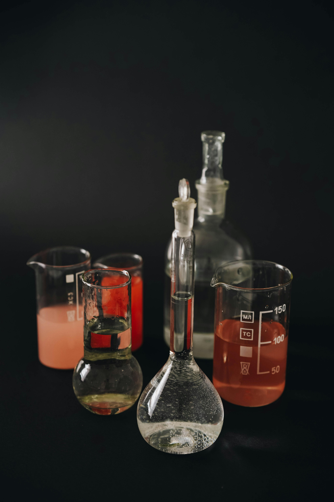

About Us | Tentang Kita
CV Tekno Alam Lestari is a solution-driven company specializing in water treatment, waste water treatment, and industrial chemical supply for various industries.
CV Tekno Alam Lestari adalah perusahaan yang berfokus pada solusi, bergerak di bidang pengolahan air, pengolahan air limbah, serta penyediaan bahan kimia industri untuk berbagai sektor industri.
We help companies optimize their groundwater treatment (WTP) and waste water treatment (WWTP) systems through practical, efficient, and cost-effective solutions based on real field conditions. Our approach focuses on diagnosing system problems, improving treatment performance, and ensuring compliance with environmental standards.
Kami membantu perusahaan dalam mengoptimalkan sistem pengolahan air tanah (WTP) dan air limbah (WWTP) melalui pendekatan yang praktis, efisien, dan ekonomis, berdasarkan kondisi nyata di lapangan. Pendekatan kami menitikberatkan pada analisa permasalahan sistem, peningkatan performa pengolahan, serta pemenuhan standar lingkungan yang berlaku.
Through our integrated divisions — Hydroflox (waste water treatment), FixFlow (groundwater treatment and filtration), and Talchemic (industrial chemical supplier) — we provide end-to-end support, from system analysis and jar testing to chemical supply and operational optimization.
Melalui divisi terintegrasi kami — Hydroflox (pengolahan air limbah), FixFlow (pengolahan dan filtrasi air tanah), dan Talchemic (penyedia bahan kimia industri) — kami memberikan dukungan menyeluruh, mulai dari analisa sistem dan uji coba (jar test), hingga penyediaan bahan kimia dan optimalisasi operasional.
Our mission is to improve water treatment efficiency, reduce operational costs, and ensure stable, compliant system performance for every client.
Tujuan kami adalah meningkatkan efisiensi pengolahan air, menekan biaya operasional, serta memastikan sistem berjalan stabil dan sesuai standar.
At CV Tekno Alam Lestari, we don't just supply chemicals — we deliver complete water treatment solutions.
Di CV Tekno Alam Lestari, kami tidak hanya menjual bahan kimia — kami memberikan solusi pengolahan air secara menyeluruh.